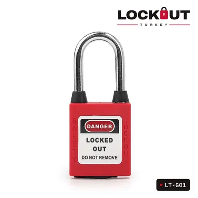
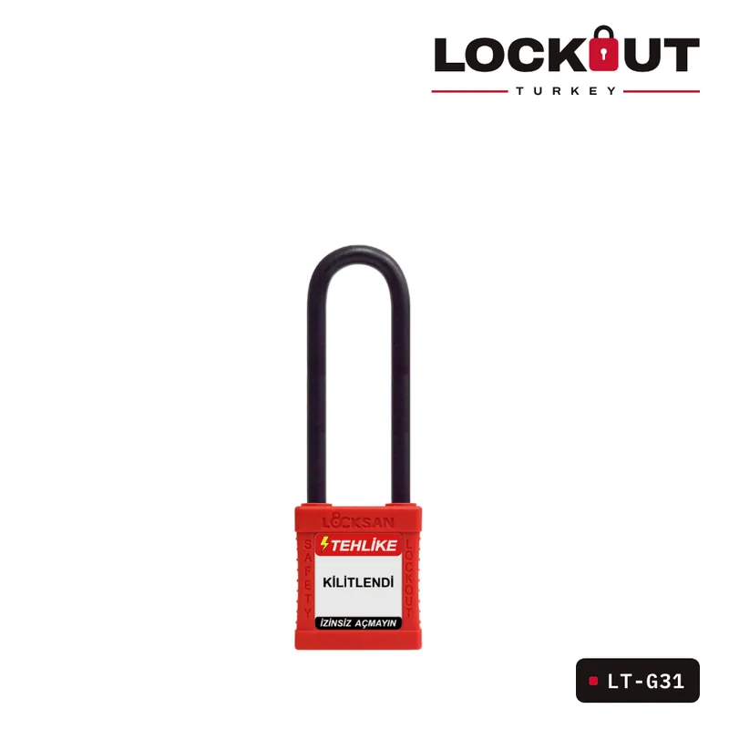
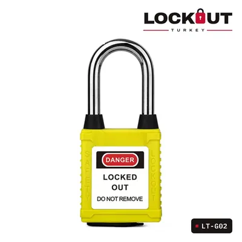
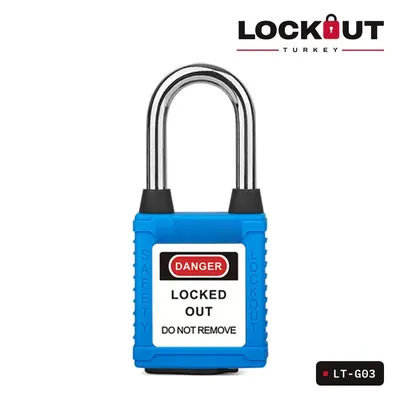
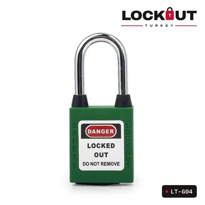

LT-G31
Plastik Çene Emniyet Asma Kilidi 76 mm – Kırmızı
LT-G31-RED, endüstriyel güvenlik ve LOTO (Kilitleme-Etiketleme) prosedürleri için tasarlanmış, yüksek…
OSHA uyumlu LOTOÖzelleştirilebilirÜrün seçim desteği
Kategori: Emniyet Asma Kilitleri
LT-G31-RED, endüstriyel güvenlik ve LOTO (Kilitleme-Etiketleme) prosedürleri için tasarlanmış, yüksek dayanıklılığa sahip bir emniyet asma kilididir. Mühendislik plastiği takviyeli naylon PA gövde ve 76 mm plastik çene, zorlu çalışma ortamlarında uzun ömürlü kullanım sunar.
Toz korumalı modelde anahtar yuvası, kullanılmadığında menteşeli bir kapakla kapanır; böylece toz, talaş ve nem kilit mekanizmasına girmez.
- Toz Koruma Kapağı: Anahtar yuvasını kapatan menteşeli kapak; toz, kir ve neme karşı kilit silindirini korur, zorlu sahalarda ömrü uzatır.
- Dayanıklı Malzeme: Kilit gövdesi, sıcaklık farkına (-30°C~+120°C) ve darbeye dayanıklı, entegre bir kabuk tasarımına sahip mühendislik plastiği takviyeli naylon PA'dan üretilmiştir.
- Plastik Çene: İletken olmayan naylon malzemeden yapılmıştır, elektriksel güvenlik gerektiren ortamlarda kullanım için idealdir.
- Toz Geçirmez Koruma: Kilit deliğine toz girmesini önlemek için özel itmeli-çekmeli toz koruma mekanizması bulunur. Büyük tozlu çalışma alanları için uygundur.
- Kimyasal ve UV Direnci: Kimyasallara, aşırı sıcaklıklara ve UV ışınlarına karşı dayanıklıdır.
- Kendiliğinden Elastik Kilitleme Mekanizması: Kilit açıldığında halkası otomatik olarak açılır, kilitlendiğinde ise silindir kendiliğinden kilitlenir.
- Anahtar Tutma Fonksiyonu: Açık bırakılmayı önlemek için kilit açıkken anahtar muhafaza edilir.
- Farklı Renk Seçenekleri: Kırmızı, Sarı, Mavi, Yeşil, Siyah, Beyaz, Turuncu, Mor.
- Kişiselleştirme Seçenekleri: Ön ve arka yüzünde "TEHLİKE" ve "ÖZELLİK" standart etiketleri bulunur. Özelleştirilmiş ışıklı PVC etiketler ve farklı dillerde baskı yapılabilir.
| Ürün kodu | LT-G31 |
|---|---|
| Kategori | Emniyet Asma Kilitleri |
| Malzeme | Mühendislik plastiği takviyeli naylon PA gövde |
| Renk | Kırmızı |
| Toz Koruması | Var – menteşeli anahtar yuvası kapağı |
| Kelepçe Çapı | 6.2 mm |
| Kelepçe Yüksekliği | 76mm |
| Ağırlık | 120 g |
| Kilit Silindiri | Çinko alaşımı (12-14 pim), pirinç silindir (6 pim) - isteğe bağlı |
- 1 × LT-G31 Emniyet Asma Kilidi
- 1 × Anahtar
Emniyet Asma Kilitleri
Tümünü görBenzer ürünler


